This section describes the items of the menu bar. Both the thumbnail window and the image window have a menu bar; they are described together here. Items that exist in only one of the windows are marked "Thumbnail window only" or "Image window only". The keys in [ ] after an item are its default shortcut keys.
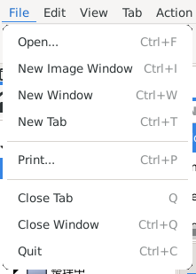
The File menu of the thumbnail window
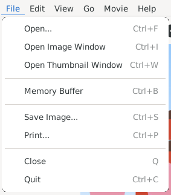
The File menu of the image window
Shows the file open dialog.
"Open selected files" creates a new image window and shows the images.
"Thumbnails of the selected files" creates a new collection tab and shows the files there as thumbnails (a collection). Selected folders (directories) are opened in a new tab each (as with a double click in the directory view). If files and folders are selected together, the files go to the collection tab and each folder to its own tab.
Creates a new, empty image window.
Thumbnail window only. Creates a new thumbnail window.
Image window only. Creates a new thumbnail window.
Thumbnail window only. Creates a new, empty tab.
Image window only. Keeps the image shown in the memory buffer. For details see "Making the image view draw faster" in the Tips.
Image window only. Saves the image shown to another file in the format chosen (a HEIC as a JPEG, ...). "Save Image As..." of the mouse menu of the preview in the thumbnail window does the same.
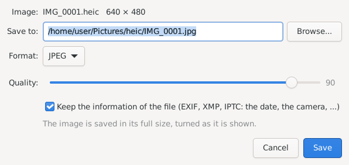
The Save Image dialog
Save to: at first the folder and the name of the image, with the extension of the format ("_2" is added to the name when it would be the image itself). "Browse..." chooses it in a file dialog. When the file is there already, it asks before overwriting it.
Format: those of JPEG, PNG, WebP, AVIF, TIFF, BMP and PNM that can be saved (WebP, AVIF, ... when gdk-pixbuf can write them).
Quality: of JPEG, WebP and AVIF (1 to 100, 90 by default).
Keep the information of the file (EXIF, XMP, IPTC): when built with gexiv2 (Exiv2). The information of the file is copied to the new file (JPEG, PNG, WebP, TIFF). The image is saved turned as it is shown, so the orientation of the information is put to normal, and the thumbnail of the EXIF is left out.
The image is saved in its full size, turned (rotated, mirrored) as it is shown. It is written in another thread. A thumbnail window showing the folder saved to is refreshed. The format and the quality chosen are remembered until gimv quits.
In the thumbnail window, prints the images selected in the thumbnail view, one image per page. When no image is selected and the preview shows an image, that image is printed.
In the image window, prints the image shown, in the orientation it is rotated to.
Thumbnail window only. Closes the active tab.
"Close Window" of the thumbnail window closes the thumbnail window; image windows that are open stay open. "Close" of the image window closes that image window.
Closes all windows of GImageView.
All thumbnail windows and image windows are closed.
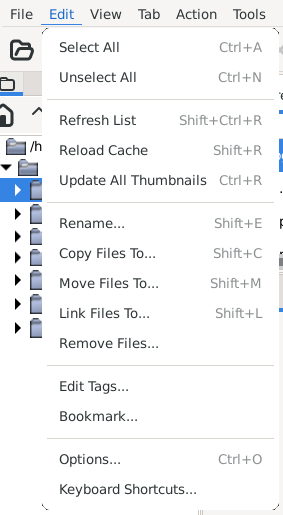
The Edit menu of the thumbnail window (one image selected)
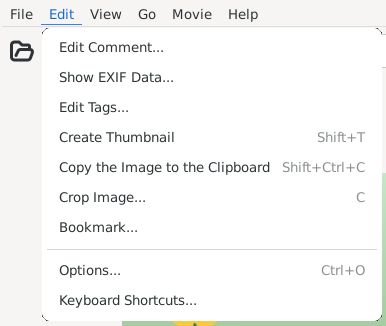
The Edit menu of the image window
Thumbnail window only. Selects all files of the active tab.
Thumbnail window only. Unselects the files of the active tab.
GImageView keeps the selection of each tab. "Unselect All" does not unselect the files of tabs that are not active.
Thumbnail window only. Refreshes the list of the active tab.
Thumbnail window only. Reloads the cache of the active tab.
Thumbnail window only. Creates the thumbnails of the active tab again. The part on screen is made first and the rest in the background, keeping the scroll position. The progress (n/N) is shown while it runs, and the stop button in the toolbar stops it.
For the differences between "Refresh List", "Reload Cache" and "Update All Thumbnails", see "The difference between Refresh List, Reload Cache and Update All Thumbnails" in the Tips.
Thumbnail window only. Renames the image (file) selected in the thumbnail view.
The name without the extension is edited; the extension (.jpg, ...) stays (without it the file is no longer shown as an image). "Change the extension too" edits the whole name; a new name without the extension of an image is then asked about, and [Rename without It] renames it so.
It cannot be used when more than one file is selected.
Folder tabs of the thumbnail window only. Renames the files whose names are not in UTF-8 (given in Shift_JIS in the MS-DOS days or in EUC-JP on UNIX; in the list they are shown in italics or as %XX, 7.1.2) to UTF-8, all at once.
For each file the bytes of its name now, the charset (the one guessed; Shift_JIS, EUC-JP, ISO-2022-JP or ISO-8859-1 can be chosen) and the new name are shown. Check the new names and press [Rename N Files]. A file whose new name is taken already, that would get the name of another file or that cannot be read in the charset is not renamed (nothing is overwritten). The thumbnail cache, the comment and the bookmark go with the file.
Thumbnail window only. Copies the selected images (files) to another directory.
Tab completion can be used in the dialog that selects the directory.
Thumbnail window only. Moves the selected images (files) to another directory.
Tab completion can be used in the dialog that selects the directory.
Thumbnail window only. Creates symbolic links to the selected images (files). Specify the directory to create the links in.
Thumbnail window only. Deletes the selected images (files).
This cannot be undone. Answer the confirmation dialog carefully.
Image window only. Edits the comment of the image shown (the data, subject, date, ..., and the note, kept in a comment file apart from the image file: 2.4).
Image window only. Shows the EXIF data of the image shown; built with gexiv2 (Exiv2), of the formats other than JPEG too.
Image window only. Creates the thumbnail of the image shown, in the format of "Cache type for saving" in [Preferences | Thumbnail Cache].
Image window only. Crops the image shown and saves the part as a new file; the image is not changed. "Crop Image..." in the right button menu of the image view and of the preview is the same.
A frame of the part (the whole image at first) is shown on the image, and a bar above it; outside the frame the image is darker.
Dragged inside, the frame moves; dragged at a side or a corner (the white squares), its size changes; dragged outside it (or anywhere while it is the whole image), a new frame is drawn. Dragging outside the image scrolls as before.
Detect the Edges: the frame takes what is inside the border of the color of the edges of the image: for a small thing scanned on a sheet of A4 or taken on a black cloth: one color (white, black, ...) around it. The shadows of the edges of the scanner and dust are left out, a small margin is kept. The result is the frame, to be put right by hand before saving.
Settings (≡): the color tolerance (40 by default: larger for a noisy scan, smaller for a pale thing), the margin (px, 8 by default), the quality (JPEG, WebP; 90 by default), keeping the information of the file (EXIF, ...), copying the comment and the tags given by hand.
Ratio: free, the one of the image, 1:1, 4:3, 3:2, 16:9; standing or lying as the frame does.
The size of the frame is shown in pixels of the image.
Save [Enter]: saved next to the image as "name_crop.jpg" (in the format of the image; JPEG when gdk-pixbuf cannot write it, PNG with transparency or for the formats of gimv's own loaders, MAG, Pi, ...; a PNG takes the comments written in the image). When the name is taken, -1, -2, ... is added: nothing is overwritten. A "Show" button then chooses the new image in the thumbnail window.
Stop [Esc]: stops cropping; going to another image or turning it stops it too.
The image is cropped in its full size, turned as it is shown (rotation, flip). It is read, its edges found and the part saved in threads.
Only with the image index. Edits the tags of the selected images (in the image window, the image shown) (2.6). No key by default.
Bookmarks the selected images (in the image window, the image shown) and shows a field for a note (2.5). No key by default.
Shows the preferences dialog.
See 7 for the settings.
Shows the keys of the menu items of the thumbnail window (with the preview) and the image window, and the other keys (the right button menu, completing a path, the navigator, the display modes of the thumbnail window), to change them. Click the key of a row and press the new key: Escape leaves it as it was, Backspace leaves the item without a key. When the key is the key of another item of the same window, you are asked whether to take it away from that item. The undo button of a row, or "Reset All to Defaults...", brings back the default. A key changed works at once (the keys of the display modes from the next start) and is written in ~/.gimv/keyaccelrc or ~/.gimv/keyconf. The entry at the top narrows the rows by a part of the name or of the key ("ctrl+t").
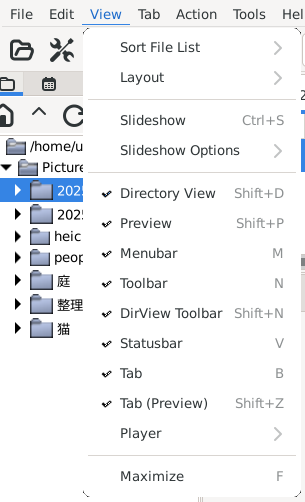
The View menu of the thumbnail window
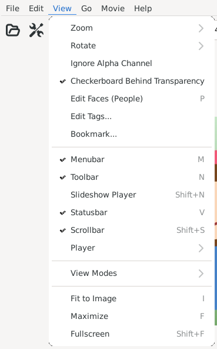
The View menu of the image window
Thumbnail window only. Sorts the thumbnail view in the order chosen.
The order applies to the active tab and to all tabs opened afterwards.
Like the selection, GImageView keeps the order of each tab, so tabs that are not open keep their order. These orders can be chosen:
by Name
by Access Time
by Date Taken (the date of the image index: the "Date" of the comment, EXIF, a date in the file name, the modification time, in this order; the modification time for an image outside the index. "Reverse Order" puts the newest first)
by Change Time
by Size
by Type
by Image Width
by Image Height
by Image Area
"Reverse Order", "Case Insensitive", "Mix Directories and Files" and "Numbers by Value" can be set as well.
With "Numbers by Value" (on by default) the numbers in names are compared as numbers, not as characters: 0p.jpg, 1.jpg, 2.jpg, 10.jpg, and not 10.jpg before 2.jpg or 0p.jpg after 09.jpg. Of the same value the one with fewer zeros comes first (1.jpg, 01.jpg).
Thumbnail window only. Changes the layout of the views (directory, thumbnail and preview) of the thumbnail window: Layout 0 to 4 (Ctrl + 0 to 4) or Custom. For the custom layout, see "About the custom layout" in the Tips.
In the GTK 4 version the layouts are shown as a row of buttons with pictures of the arrangement. In the pictures, D is the directory view, T the thumbnail view and P the preview. The tooltip of a button shows the name and the shortcut key (Ctrl + 0 to 4). The picture of Custom shows the current custom layout.
Thumbnail window only. Chooses the arrangement of the views (directory, thumbnail and preview) of the thumbnail window from the prepared compositions.
In the GTK 4 version the compositions are shown as buttons with pictures of the arrangement. The tooltip of a button shows its name.
Thumbnail window only. Starts a slideshow of the active tab.
The slideshow is set up in 7.5.
Thumbnail window only. The order and the files of the slideshow.
Start from the First / Start from the Selected / Random Order: the order.
Selected Only: shows only the selected images.
Images and Movies / Images Only / Movies Only: the kinds of files shown.
Image window only. Zooms (enlarges or reduces) the image shown and sets "Keep Aspect Ratio".
There are Zoom In [S], Zoom Out [A], Fit to Window [W], Fit Width [Shift + W], Fit Height [Shift + H], Keep Aspect Ratio [Shift + A], and 10% to 200% [1 to 9]. For other scales use the toolbar.
When "Keep Aspect Ratio" is checked, the aspect ratio of the image is kept when it is enlarged or reduced.
Image window only. Rotates the image shown (the image file is not changed): Rotate 90 Degrees Clockwise [R], Rotate 90 Degrees Counterclockwise [E], Rotate 180 Degrees [D], and Flip Horizontally [X]. The rotation and the flip are remembered for each image and shown again when it is opened (Remember the rotation and flip of each image).
Image window only. Shows the image without its transparency.
Image window only. The background of images with transparency is shown as a gray checkerboard. The initial state follows Show a checkerboard behind transparent parts of images in [Preferences | Image Window].
Thumbnail window only. Shows or hides the directory view.
Thumbnail window only. Shows or hides the preview.
Shows or hides the menu bar.
Shows or hides the toolbar.
Thumbnail window only. Shows or hides the toolbar of the directory view.
Image window only. Shows or hides the toolbar for controlling slideshows.
Shows or hides the status bar.
Image window only. Shows or hides the scroll bars.
Thumbnail window only. Shows or hides the tabs of the thumbnail view.
Thumbnail window only. Shows or hides the tabs of the preview.
How the toolbar for playing movies and audio is shown: "Show", "Hide" or "Auto". "Auto" shows it only while a movie or audio file is shown.
Shows pages side by side like a book or a comic (the preview and the image window; in the preview from the right button menu). Two pages by default; other layouts such as four pages can be chosen. It is turned on by hand: no folder or archive starts it by itself.
Two Pages [T] : Turns pages side by side on and off. The image chosen and the images after it in the list are shown.
Page Layout : Chooses the layout: at first "Two Pages (2 × 1)" and "Four Pages (2 × 2)", pages side by side × rows. The layout chosen is used in that window and in the windows opened next.
Right to Left (Manga) : On, the image chosen is on the right and the next one on its left. Off, left to right. Rows go from the top. A setting of the current layout.
First Page Alone : On, the first image of the list (the cover) is shown alone. A setting of the current layout.
Shift One Page [O] : Goes on by one page, to pair the pages the other way, for a book whose spreads do not match.
Edit Layouts... : Opens a window to edit the layouts: for each, its name, pages side by side (1 to 4), rows (1 to 3), right to left, first page alone; layouts can be added, removed and moved up and down. Changes are shown at once and kept in the settings. The name is shown in the menu and the status bar.
The next image (a click, Space, Page Down) shows the next pages, the previous image (Page Up) the ones before. A click of the left button goes by the side clicked: in a book from right to left the left half goes on and the right half back (left to right, the other way). With the pointer on the image, that side shows where a click goes ("◀ Next", "Previous ▶"). The pages are shown at the height of the first one without a gap. A wide image (a spread scanned as one) is shown alone, and the pages before it end there.
While pages are shown side by side, Create Thumbnail, Crop and Edit Faces cannot be used (it is not the image of a page).
A book (a folder or an archive) read with pages side by side is remembered with its last page and layout (~/.gimv/books, the 1000 most recent): when a tab of it is opened again, that page is chosen and shown in the preview with pages side by side (going on from there). Turning them off in the book forgets it. Pages side by side are for the tab (the book) they were turned on in only: an image opened from another tab, or from a list of dates, tags and so on, is shown alone; opening an image in the tab of the book again shows pages side by side again. Closing that tab turns them off (the book is still remembered). While pages are side by side, the pages of the next turn are read beforehand in a thread (the formats of GdkPixbuf; the images in an archive are extracted first).
With "Auto resize to image size" of the image window, the window is sized for all the pages of the layout (four pages for 2 × 2), the cover shown alone too, and only when pages side by side are turned on, the layout is changed or another folder is shown: turning pages does not change the size of the window ([View | Fit to Image] sizes it again at any time).
With pages side by side, the status bar shows "Two Pages 2-3 / 8" (the name of the layout and pages 2 to 3 of 8) or "Two Pages 6 alone / 8" (page 6 shown alone) on its right; for the preview, the status bar of the thumbnail window. In the image window the Two Pages button of the toolbar turns it on and off too.
Image window only. Switches the way of showing (image display, the movie and audio plugins).
Image window only. Resizes the image window to the size of the image shown. This is the same as [Fit Window Size to Image] of the toolbar.
The scale of the image does not change; the image window is resized.
Maximizes the window or restores it.
Image window only. Turns fullscreen on or off.
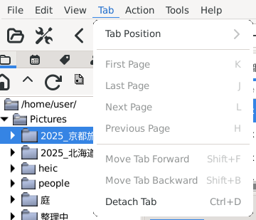
The Tab menu of the thumbnail window (one tab)
This menu exists only in the thumbnail window.
Changes the position of the tabs: Top, Bottom, Left or Right.
Makes the first (leftmost) tab active.
Makes the last (rightmost) tab active.
Makes the next tab (one to the right) active.
Makes the previous tab (one to the left) active.
Moves the active tab one place to the left.
Moves the active tab one place to the right.
Detaches the active tab into a new thumbnail window.
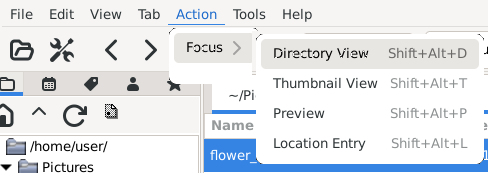
The Action | Focus menu of the thumbnail window
This menu exists only in the thumbnail window.
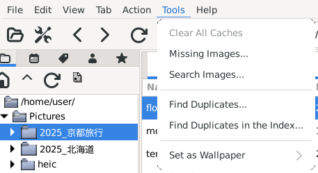
The Tools menu of the thumbnail window
This menu exists only in the thumbnail window.
Deletes all thumbnail caches of the format of "Cache type for saving" in [Preferences | Thumbnail Cache].
Opens the list of the images with comments (tags) that went missing, whose comments can be put on where they went or on another image, or deleted (2.6). Only with the image index.
Opens the window to find images of the index by tags, people and a period (2.8). Only with the image index.
Looks for the duplicate images among all the images of the active tab (the selection does not matter) and opens the result window. One search sorts them into these kinds:
Identical: the same files (the same bytes).
Other Sizes: the same picture in other sizes (pixels): the same shape, none of the same size. Copies are included.
Same Pixels: the very same pixels, only the metadata (date taken, comments) or the format differs.
Saved Again: the same picture saved again in another quality, format or size (only the noise of JPEG differs).
Brightness, Colours: the same picture, the whole of it a little brighter, darker or of other colours.
Partly Different: a part differs (another face or clothes of a difference picture, writing, a mark).
Alike, Other Pictures: alike but other pictures (pages one after another, shots one after another).
How similar is set by "Accuracy" in [Preferences | Search]. The ones alike of the same size are compared again at the end, small and at full size, and sorted from Same Pixels to Alike, Other Pictures (in a thread).
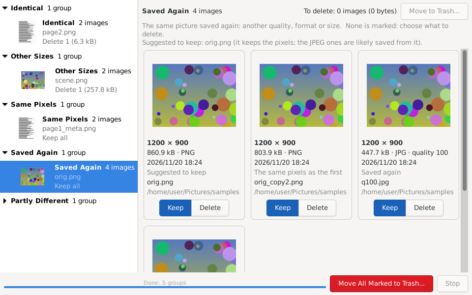
The result window of the duplicates
On the left are the groups, under a heading of each kind that opens and folds with its arrow (or a double click). At first Identical, Other Sizes, Same Pixels and Saved Again are open, and Brightness, Colours, Partly Different and Alike, Other Pictures folded (they are usually not deleted). Each group shows the kind, the number of images, and how many are to delete (and their size). The images of the group selected are side by side on the right to compare: the size, the file size, the format, the date taken, how alike the first, the folder, and whether it has a comment. A click on a picture shows it in the thumbnail window (what it does is set in [Preferences | Search]).
Each image is marked "Keep" or "Delete". In the Identical and Other Sizes groups the one with the most pixels (then the largest file, the oldest) is kept and the others are to delete, but in an Other Sizes group a copy found to be a smaller one only made larger shows "Looks like an enlarged copy" and is not the one kept (it is looked for in a thread after the groups are shown, and each group is ordered again when done; Keep and Delete chosen by hand stay); in the Same Pixels and Saved Again groups the one that seems best to keep comes first with "Suggested to keep" and why (the same pixels: the largest file, with the most metadata; saved again: a format keeping the pixels such as PNG, the most pixels, the highest JPEG quality), shown only: nothing is marked to delete. The cards show the JPEG quality and how each differs from the first (saved again, another size, brightness or colours, a part, another picture). In the groups of the other kinds all are kept. "Move to Trash..." at the top right moves the images to delete of the group shown, and only those, to the trash after asking (they can be put back from the trash): a group at a time, to be careful. The question names the files and says so when all of the group are to delete (then "Cancel" is the default) or some have comments. Then the next group is shown. With more than one group, "Move All Marked to Trash..." at the bottom moves those of all the groups at once (the groups with every image to delete are left out).
Before they are moved, the images to delete are compared with the image kept again (Identical groups): a file changed since is not moved. When some of them have comments (tags) or bookmarks, "Move Them to the Kept Ones and Trash" can be chosen: a comment moves to the image kept when it has none, else its tags are added to those of it (a comment of tags only is then deleted); a bookmark moves when the image kept has none. With "Move to Trash Only" the comment files stay.
When the file names mean something, "Trash and Leave Links" (Identical groups only) moves each file to the trash and puts a link to the image kept under its name: a hard link on the same file system (no space used, not broken when the image kept is moved), else a symbolic link (the absolute path of the image kept). The comments, tags and bookmarks stay with the name. When the link cannot be made, the file is not moved either.
The window reads the pictures itself: the images the thumbnail view has not loaded are shown too. It can be used while it searches: the Identical groups come first, all of them at the end. The images in archives are not compared. How they are found and sorted: see "How duplicates are found".
Looks for the same files (Identical) among all the indexed images and opens the same result window: the same files in different folders are found too. The index has looked for them before, so nothing is read and they are shown at once. This needs "Look for the same files" in [Preferences | Index].
The index reads only the images of the same size (bytes) as another one, after the rest: the first 64 KB are compared, and the whole files only when those are the same. The images of the same name and size (saved again in another folder) come first, so those are found at once. With many images the first time may take hours; meanwhile the status bar says "Index: same files n%", and the window shows what is found so far. Hard links to one file count as one. Other sizes and similar pictures are not looked for here (Find Duplicates on the images of a tab does that).
Below a folder only: "Find Duplicates with the Folders in It..." of the directory view; the same files as an image: "Find the Same Files" of the thumbnail view.
Makes the selected image the wallpaper of the desktop. "This Desktop" uses the command for the running desktop (environment variable XDG_CURRENT_DESKTOP). Below it are items for each desktop: Xfce, GNOME, KDE Plasma and others.
Images other than JPEG and PNG, and images in archives, are converted to PNG in ~/.gimv/wallpaper/ and that file becomes the wallpaper. The items and commands can be changed with wallpaper_menu in ~/.gimv/gimvrc.
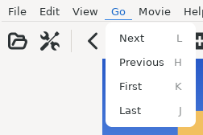
The Go menu of the image window
This menu exists only in the image window.
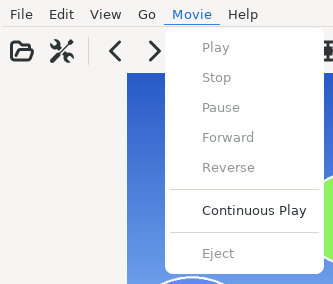
The Movie menu of the image window (an image shown)
This menu exists only in the image window. It can be used while a movie or audio file is shown.
A song (m4a, mp3, flac, ogg, ...) with album art in it shows the art while it plays, and the art is its thumbnail (the GStreamer plugin). The art is shown at its own size (smaller only when the place is smaller), and the zoom of images (zoom in, zoom out, the percentages, fit to window) changes its size. A song without album art shows a black screen as before and has no thumbnail.
Controls the playback of movies and audio.
When playback ends, the next file is opened and played. The initial state follows continuous play in [Preferences | Movie and Audio].
Can be used while the Xine plugin shows the file. While stopped, it lets you choose an input plugin of xine, and the list of what that plugin can play (MRLs) is shown instead.
At the right end of the control bar under the movie (not in the menu). The speaker button turns the sound off and on, and the slider next to it sets the volume (the mouse wheel too). Moving the slider while the sound is off turns it on again. The volume and the mute are the same for all the windows and are kept after quitting. With the GStreamer and the MPlayer plugins (with MPlayer it is mplayer's own volume, not the sound card's).